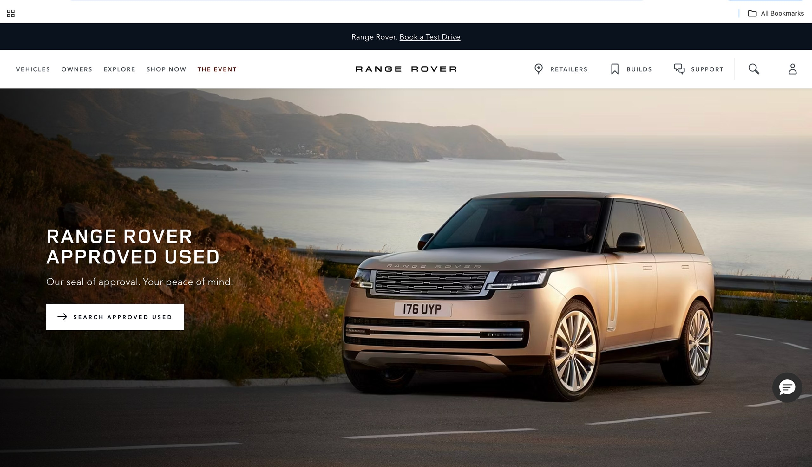

Selected
Work
Two UX case studies and a body of UI work — enterprise UX strategy at Accenture, a full site designed and built from scratch, and brand campaigns delivered for JLR across Range Rover and Land Rover.

01Approved Used
JLR · UX/UI Designer · Accenture · April 2026 – Present
JLR had a growing backlog of approved used stock. With retailers unable to bring in new vehicles until existing inventory moved, shifting approved used became a commercial priority — not just a UX one. My role was to audit the current digital entry points across Range Rover and Land Rover, understand why users weren't engaging with approved used, and propose changes grounded in data.
 02
02
NHN Horizon
Commodity Trading · UX, UI & Front-end Build
A full website design and build for a commodity trading company operating across two distinct markets — agriculture, sourcing from Northern Nigeria and East Africa for wholesale buyers in the Middle East, and oil & gas in the Nigerian market. Competitors in this space run static, linear sites with a formal, information-led tone, and the site needed to sit credibly in that landscape while giving each audience a tailored experience without fragmenting the brand. I took it from positioning and competitor research through to a Figma design system and a React build. NHN Horizon is a venture of my own, which meant the commercial trade-offs were mine to make as well as the design ones.
Experience 01
Agriculture
Grounded in trust and provenance — an earthy, assured visual language that speaks the language of agricultural commodity traders. Warm tones, clear market information, and a tone of reliable expertise.
Experience 02
Oil & Gas
Precise, technical, and commanding — a darker, industrial feel that meets the expectations of energy sector professionals. Clean data hierarchy, authoritative tone, and a focus on scale and reliability.
UI Work
Range Rover
UI Collection
Three campaigns delivered across the JLR engagement. Each had its own constraints — tight deadlines, strict brand guidelines, a premium bar that couldn't slip. The challenge wasn't coming up with ideas, it was executing to a standard where every asset feels native to one of the world's most recognised luxury brands.